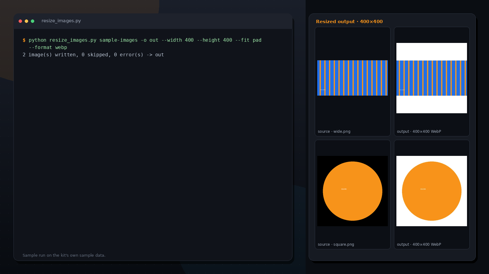

Resize, convert and watermark whole folders.

A still frame from a real run on the kit's sample data. The download is the Python command-line tool shown here — this page is a preview, not a live terminal.
python resize_images.py ./photos -o ./small --width 1200
python resize_images.py ./shop -o ./web --width 800 --height 800 --fit pad --format webp
python resize_images.py ./marked -o ./out --watermark "(c) YourBrand"
That was the 12-second preview. Unlock the full download to run the tool on your own files.
Unlock full version · $8.99The complete ZIP is delivered after your payment is verified on-chain.